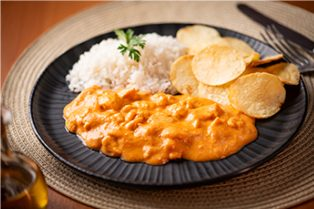
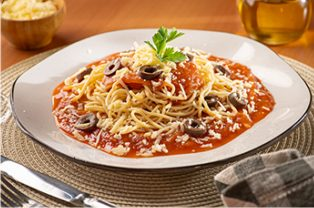

Reconstrução vetorial · aguarda o arquivo original
Royal Parma Franquias
Uma receita de família, servida em rede.
Como funciona uma loja Royal Parma, o que a franqueadora entrega e o caminho até a abertura.

O prato como ele chega
- Delivery
- Retirada no balcão
O cardápio
O cardápio inteiro cabe numa caixa.
Comida de casa em marmita, entregue na caixa kraft com o brasão.
Parmegianas
Parmegiana de frango

Pratos da casa
Strogonoff de frango

Massas
Spaghetti ao sugo

Como chega
O pedido na caixa kraft
Também no cardápioParmegiana de mignon, parmegiana de abobrinha, risotos, adicionais e bebidas. Fotos publicadas pela Royal Parma; os pratos sem foto padronizada entram depois da sessão de fotos.
Obrigado.
Vamos falar da sua cidade.
Canais oficiais da expansão
Recebeu proposta de outro número em nome da Royal Parma Franquias? Não pague nada e confirme por um destes canais.
Royal Parma Franquias[razão social] · CNPJ [nº]royalparmaoficial.com.br
Valores estimados. Podem variar conforme praça, operação e execução. Informações completas na Circular de Oferta de Franquia (COF).
0112